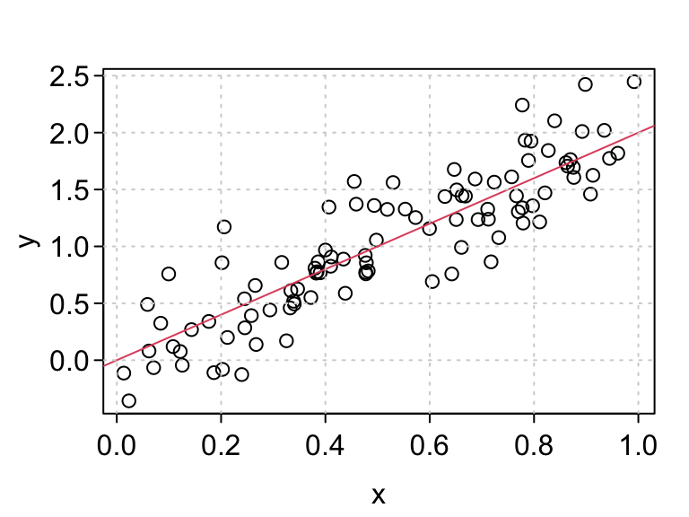

n <- 100
sigma2 <- 0.1
beta0 <- 0
beta1 <- 2
x <- runif(n)
eps <- rnorm(n, mean = 0, sd = sqrt(sigma2))
y <- beta0 + beta1 * x + eps
plot(x, y)
abline(a = beta0, b = beta1, col = 2)
grid()
David Gerard
June 3, 2025
For this lecture, let’s suppose that we want to create a package to simulate data from the normal simple linear regression model.
Recall that the normal simple linear regression model is of the form \[\begin{align} Y_i &= \beta_0 + \beta_1X_i + \epsilon_i\\ \epsilon_i &\sim N(0,\sigma^2) \end{align}\]
Here,
If we had the \(X_i\)’s, \(\beta_0\), \(\beta_1\), \(\sigma^2\), and the sample size \(n\), then it would be easy to simulate under this model.
There are many design considerations for simulating under this model:
Let’s start with a basic function where we assume the user has provided everything. We’ll expand on this later.
#' @title Simulate SLR
#'
#' @description Simulate response values from the normal simple
#' linear regression model.
#'
#' @param n The sample size
#' @param x The values of the predictor variable for the \code{n}
#' individuals.
#' @param beta0 The y-intercept.
#' @param beta1 The slope.
#' @param sigma2 The error variance.
#'
#' @return A vector of length n. The values of the response variable.
#'
#' @author David Gerard
#'
#' @examples
#' n <- 100
#' x <- runif(n)
#' beta0 <- 0
#' beta1 <- 2
#' sigma2 <- 0.5
#' y <- simreg(n = n, x = x, beta0 = beta0, beta1 = beta1, sigma2 = sigma2)
#' plot(x, y)
#' abline(a = beta0, b = beta1)
simreg <- function(n, x, beta0, beta1, sigma2) {
eps <- stats::rnorm(n = n, mean = 0, sd = sqrt(sigma2))
y <- beta0 + beta1 * x + eps
return(y)
}One hallmark of good programming is to return an error as early as possible.
For example, what if the user provided an incorrect input
It ran OK, but there was no error even though n = 100. What gives? Let’s look at a plot.
So R is recycling the one error term that it simulated. It would be nice to catch this so that it doesn’t hurt a user down the road.
An assertion is a statement during your code that should always evaluation to TRUE. If an assertion evaluates to FALSE then this throws an error.
In R, the base assertion is stopifnot().
If you want to be more explicit about your errors, you can put stop() inside an if-then statement.
For user-facing functions, I like to check user arguments for validity in R.
Let’s try this out for simreg().
Then we get an error that tells us we made a mistake. This could save a user a huge amount of debugging time down the road.
If you just don’t like the behavior, but don’t want to kill the program, use warning().
simreg <- function(n, x, beta0, beta1, sigma2) {
## Check input
if (length(x) != n) {
warning("n not equal to length(x). Recycling error terms.")
}
## Simulate y
eps <- stats::rnorm(n = n, mean = 0, sd = sqrt(sigma2))
y <- beta0 + beta1 * x + eps
return(y)
}
y <- simreg(n = 1, x = x, beta0 = beta0, beta1 = beta1, sigma2 = sigma2)Exercise: Add assertions to check:
n, beta0, beta1, and sigma2 are all length 1.sigma2 is non-negative.You should also place assertions in the middle of code (not just checking user inputs) in cases where you want to be doubly sure that your code is working.
E.g. I often place an assertion during optimization scripts to make sure that the objective function is not decreasing each iteration.
So far your work flow has been to iteratively:
devtools::load_all()This is great, but informal. If your code changes, those informal checks you ran might no longer work, and you wouldn’t know.
A unit test is a stored test that you can rerun automatically.
Your workflow when coding using unit tests is to:
devtools::test(). This will run all unit tests.Writing unit tests is a fair amount of work but it is worth it because:
{testthat} is one of the R package that implements unit tests in R. The other popular ones are probably {RUnit} and {tinytest}.
To use {testthat}, run
This will have created a new folder “tests”. Inside this folder is an R script “testthat.R” and another folder “testthat”.
.
├── DESCRIPTION
├── NAMESPACE
├── R
└── tests
├── testthat
└── testthat.R“testthat.R” contains a few lines of code telling R to run all of your unit tests during package checking.
Unit tests will be in R scripts inside the “testthat” folder.
Expectation: Describes expected result of a computation.
expect_*()Test: A group of related expectations. Usually, a test tests only one function, or a couple tightly related functions. A test is created with test_that().
Testthat File: A collection of related tests.
An expectation returns an error if a function or result is not what you expect.
In {testthat} all expectations begin with expect_.
The first argument is the actual result of a function in your package. The second argument is the expected result.
The most common expectation is to test for equality with expect_equal().
You can specify the tolerance level so for items that are only approximately equal
Make sure to only check for equality between two things. If you provide three unnamed arguments, the third one is interpreted as the tolerance. This is a common error that I have done many times.
Use ignore_attr = TRUE if your objects have different attributes and you just care about the numeric values (default expect_equal() will throw an error):
The local_edition(3) code makes it so my code chunks use the most recent {testthat} functions. You don’t need to worry about that in your package. {usethis} will automatically assume the third edition. You can explicitly use the third edition by adding the following to your DESCRIPTION file:
expect_match() checks for a regular expression match.
You can use expect_warning() and expect_error() to check that your functions error correctly.
simreg <- function(n, x, beta0, beta1, sigma2) {
## Check input
stopifnot(length(x) == n)
## Simulate y
eps <- stats::rnorm(n = n, mean = 0, sd = sqrt(sigma2))
y <- beta0 + beta1 * x + eps
return(y)
}
x <- runif(100)
beta0 <- 0
beta1 <- 2
sigma2 <- 0.5
expect_error(simreg(n = 1,
x = x,
beta0 = beta0,
beta1 = beta1,
sigma2 = sigma2))It is recommended that you think harder about your unit tests, but you can just test for a non-error by using expect_error() and setting regexp = NA
expect_type() is tests for the type of the output ("double", "integer", "character", "logical", or "list").
expect_s3_class() is used to test for the class of the object (e.g. "data.frame", "matrix", "tibble", "lm", etc..)
expect_true() acts like stopifnot() except for unit tests instead of assertions.
Example: A common test for a simulation script is to see if estimators that we expect to work well on average do, indeed, work well on average. In the case of the simple linear regression model, we will check that, for large \(n\), the OLS estimates are reasonably close to the true value of \(\beta_1\)
Exercise: Write an expectation that the output is a numeric vector.
Expectations go inside tests.
All {testthat} tests are of the form
The first argument is a human-readable and informative description of what the test is accomplishing.
The second argument is is an expression where you put code.
{}.Let’s put out a couple expectations in our test for simreg().
test_that("simreg() output is consistent", {
set.seed(991)
x <- runif(1000000)
beta0 <- 0
beta1 <- 2
sigma2 <- 0.5
y <- simreg(n = length(x), x = x, beta0 = beta0, beta1 = beta1, sigma2 = sigma2)
lmout <- lm(y ~ x)
expect_equal(coef(lmout)[[2]], beta1, tolerance = 0.001)
expect_equal(length(x), length(y))
})Test passed 🥇Notice that I put two expectations in the same test. This is all connected to the output of simreg(), so it makes sense to put them in the same test.
Whenever a test generates something randomly, I like to set a seed for reproducibility.
set.seed().If you find yourself printing stuff in the console when writing code, try writing a test instead.
I usually have a unit test open at the same time that I am coding a function.
Try to test a function in only one file. If you do change something and need to update your tests, that will make it easier to update.
A testthat file is just an R script that holds a few related tests.
You can create an R script for unit testing by typing
specifying the name of the R script.
You should choose a one or two-word name (separated by dashes -) that describes the collection of tests. E.g.
Exercise: Edit regsim() so that x is either a vector or NULL. If NULL, then your function should simulate x from a standard normal distribution. You can check if a value is NULL via is.null(). The function should then return a list of length two with the simulated x and y values. Create a new unit test for this new behavior.
Exercise: In simreg(), if x is provided, then n is not really needed since it can be inferred from x. Set the default of n to be NULL and only require it if x is not provided. Give a warning if both x and n are provided, and throw an error if both x and n are NULL. Write a unit test to check all of these new behaviors. Note: It is typical (and good practice) to put all arguments with defaults after all arguments without defaults.
There are various ways to estimate what proportion of lines of your code are covered by unit tests.
The {covr} package will do this for you with
Running this is as far as we’ll go in this class.
If you have an open-source repo on GitHub, then you can use different some websites to automatically check your test coverage each time you push.